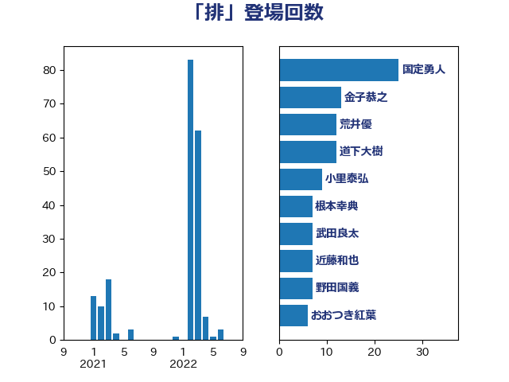

単語「排」

| 国定勇人 | 自由民主党 | 25 回 |
| 金子恭之 | 自由民主党 | 13 回 |
| 荒井優 | 立憲民主党 | 12 回 |
| 道下大樹 | 立憲民主党 | 12 回 |
| 小里泰弘 | 自由民主党 | 9 回 |
| 根本幸典 | 自由民主党 | 7 回 |
| 武田良太 | 自由民主党 | 7 回 |
| 近藤和也 | 立憲民主党 | 7 回 |
| 野田国義 | 立憲民主党 | 7 回 |
| おおつき紅葉 | 立憲民主党 | 6 回 |
| 斉藤鉄夫 | 公明党 | 6 回 |
| 岸真紀子 | 立憲民主党 | 4 回 |
| 新谷正義 | 自由民主党 | 3 回 |
| 津島淳 | 自由民主党 | 3 回 |
| 石川香織 | 立憲民主党 | 3 回 |
| 佐々木さやか | 公明党 | 2 回 |
| 滝波宏文 | 自由民主党 | 2 回 |
| 稲田朋美 | 自由民主党 | 2 回 |
| 芳賀道也 | 国民民主党 | 2 回 |
| 萩生田光一 | 自由民主党 | 2 回 |
| 冨樫博之 | 自由民主党 | 1 回 |
| 岡本あき子 | 立憲民主党 | 1 回 |
| 梅村聡 | 日本維新の会 | 1 回 |
| 橘慶一郎 | 自由民主党 | 1 回 |
| 神谷裕 | 立憲民主党 | 1 回 |
| 竹内譲 | 公明党 | 1 回 |
| 菅義偉 | 自由民主党 | 1 回 |